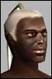
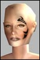
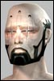

Anarchy Online Bulletin Board > Game-Play > PvP Conflict > 3 fixer cant take down 1 doc together in 5 minutes...
Anarchy Online Bulletin Board > Game-Play > PvP Conflict > 3 fixer cant take down 1 doc together in 5 minutes...| Pages (11): « First ... « 7 8 [9] 10 11 » |  Last Thread Next Thread Last Thread Next Thread  |
| Author | Thread |
| -kromoz- Leetas  | SHUT UP WHINERZ LOL, GO PLAY CHESS !!!!!!!!!!!!!!!! |
 January 8th, 2003 06:45 January 8th, 2003 06:45 | #161 |
| binaural Supa Leet  | Having a tough time deciding whats less contstrutive. people calling nerfs.. or the people like kromoz who just say rediculous things instead of acknowlegging or contributing anything to the debate. ah wells. |
| January 8th, 2003 07:12 | #162 |
| Julka_Pomy Supa Leet  | Pfft i read this all... doesnt make any sence to me  About doctor Playing doctor is all about making choices. Its a great proffesion cang be boring. And only good at pvp at high lvls whenw e get IP to pump into PM and we can cast CH> I play doc and NT honestly in PvM my NT is mroe fun then doc. With doc is buffing team HP and presing team heal till you fall a sleep. However the only thing that keeps me going is becasue i am most important person in unique raids. You can do ljutor, Lamb, The One, OE, Ian War without MP, Trader, NT, Engi, Agent, Adventurer, MA, Soldier, Enforser, NT or Crat but you cant kill them without Doc. And btw how many doctors you see pvping? And how many fixers/soldiers/enforsers/nt/traders. We are good becasue we have alot of tools in pvp. But it all has its side effect. Our Damge All our weapon skills except shotgun/pistol are 3 per lvl. I hcave as much AR self buffed with riffle triple implated as same lvl doctor with ithaca and only shining shotgun implant. Now all ranged weapon skills implants confict with our nano skills implants. Sure with pain of patricia we can do ok damge but at the cost of losing faded ts. That means not good hot and not good team hp. Same with any other weapon. And we have to make choise either go with bigger gun or better armor. btw if i dont debuff Augmentd Hellspiner soldier he will kill me. I run out of nano healing agaisnt Skymarshal when we tested this. And thats with 8k nano pool and 35% nano reduction self, he barely got below half HP. Ah yes i wasnt doting him. Our DoTs Again choices. Either using dot or not. Wrack and ruin cost 1500 nano sentinent nano googer 1200 nano even with my 8k nano pool and 35% nano reduction selfbuffed i cant affor to run around and dot everyone. Plus Wrack and Ruin has 7 seconds recharge time so no heals/debuffs during that time. So you either running around doting people or healign debuffing. As fryli once said. 3 enforsers can do 3 brawls on you, 3 soldiers can do 3 fa/as/burst on you 3 NTs can do 3 keils on you now 3 docs cant stack 3 wrack and ruin and 3 sentinet nano googer on you. Our Debuff We ahve to lines of debuff and only one is working. Our debuffs depends on nano skills debuff our nano skills no debuffing. Debuff my PM by 90 which is easy if you have MP i cant do UBT anymore. Our debuffs are very easy to remove just sit click on virsus scaner ql 150 and no more UBT. Crats are better on initiate debuffing in Mass Combat then doctors they have 1.2k AOE debuff that impsoible to remove with virus scaner and only can be removed by getting hit and now how many people out of 30 crowd getting hit? Main reason i debuff is to healp people of my side i dont get ppvp points ofr debuffing but i save alot of people from getting drained getting instanuked by antifixer nuke getting instasnared and kileld by that nasty EQB. Trust me its almoust imposible to debuff and heal at the same time. So you either debuffing only or healing only. And also either better debuff or better nano resitace becaouse shining PM goes into head same as shining NR. Outside Buffs Someone said with outside buffs we can do good damge. I am sure that someone doesnt know what NCU is. Even with best fixer buff and only recompiler i hardly fit in RRFe, Essence, HoT, Run Buff, My hot (56 NCU cost) My Short HP (56 NCU cost) my nr buff my nano ini buff, OS, OIR, PNH my team HP buff and expertises. Now where do i suppose to get 150 extra NCU for MoP, TTS, UA or EP? So again either bigger gun or better protection i go with second Our Heals Yes they are best in game but our primarary job is to heal. yes maybe they are overpowered but we stillc an argue about that. I doubt people whom i save with Complite Healing on daly basis want it to get nerfed. 9 out of 10 Complite ehals i cast in pvp goes to my teamates and people who get attacked by enfrosers when i can /assis. Heals are BM/MM dependent. Debuff those skills no mroe healing. 3 classes can do that. Plus one class can debuff our abiliy to complite heal. Not to mention complite heal has 8 seconds recharge time. And cost 1400 nano and impsoble to use in lag becasue by the time you get damge messanges you might be already at reclaim. Our Defences My defences on full defence cant even get close to MA defences on half agro. Our main defencive ability is healing its easy to stop me from healing. Its hard to stop people from being protected by TMS/RRF/Layers/Nulity/Grid Armor/Light Green Evades. Its hard to stay alive in mass combat when 30+ people want to kill you first. Conclusion. If you feel that your class sucks at mass pvp then try doing what you best at. Agents pick on targets that have low HP and kill them with concetration. Sneak into enemy lines and get status on how many and who. I remeber i fight at BoB base in DAV one of our agents sneaked to the controler. Adevnturers do some damge and help doctors with healing. Also search around for sneaking people. Crat do chaincast area calms area roots send pets on peopel who are at low HP. Engineer build towers help teamtes with stay with corwd so they have AC buff send you pet on towers. Keep anti special debuff refreshed on your friends. (i always keep my short term Hp refreshed on my teamtes) NT Area blind kill fixers area nuke. MP Debuff docs with BM/PM dominates Debuff Traders with PM dominates Debuff other people help with stun, Fixers; Snare enemies and help to take out enforsers. Work together with enforser they pick target you chainroot them. Soldiers Work together with enforser and fixer debuff target with complite heal debuff and alpa target. Just shoot at eerthing you think is necesary to kill not that will give you higher title points. Traders. Keep nts, doc debuffed. Area root. Enforser Kill people with EQB MA Wait for funcom to fix you Docs Work with your teamtes. keep NT, Fixers, Traders, Crats debuffed so they dont anoy with AOEs. If you see enforser assit on him and heal his target. Keep your teamtes alive. Thats all i have to say |
| January 8th, 2003 07:34 | #163 |
| Letah Supa Leet  | Good post pompom, I bet it gets replied with the same statement; that we are better tanks then enf/soldier.. A soldier can tank 1min20, an enf some time too with the loads of HP, I *cant* with so many ppl bashing at me. No doc can. Against 3 blue insects I can yes.. |
| January 8th, 2003 08:33 | #164 |
| Insida Supa Leet  | Why should you be able to tank while all the other support proffession cant? Gimme a good reason. Being a healer and being needed for your team is a good reason to NOT be able to tank IMO. |
| January 8th, 2003 12:05 | #165 |
| Sheffy Supa Leet  | As I discussed with you in-game today, we can tank, most of the time unintentionally, because we can heal. You agreed with me that we are much better off standing back and healing teammates. If we do happen to take aggro, we can tank the mob for a short while by healing ourselves while we pray for aggro to shift back to a "real tank". But you need to understand, just because we can doesn't mean we want to, or even often do. Sure, we can tank mission mobs, but because we can out-heal their damage. The higher lvl mobs we can not tank, plain and simple. I've personally tried (unintentionally, again) to tank Diamondine Trainee/Soldier, OI/OE, Agent Lamb (lol), and even some Primus Mobs and I'm generally dead within 15 seconds because I die in my CH recharge. lol, why on earth is that so difficult to understand. Healing = ability to "tank". The only reason an Enforcer is able to tank with a Doc in the team is because we are healing them repeatedly. Without the healing, they are toast. But, they can do it better than we can because its easier to heal someone with 17000 hp than our lame asses with 7-9k hp. Last edited by Sheffy on January 8th, 2003 at 12:19 |
| January 8th, 2003 12:15 | #166 |
| boco king of the n00bsauce  | quote: dude, I'm an nt, and cant heal, yet i can tank, not *just* with ns, but the fact that i can get 10k hp.. there isnt much difference between an enf with 10k hp, and an nt with 10k hp. Not *only* that, if i COULD heal, I would really put the name nanoTANKnician to work. -boco kthxbyeggplzdrivethroughYEWVEBEENPWNED |
| January 8th, 2003 12:25 | #167 |
| Tenkx Supa Leet  | it is no problem that 3 ga fixers cant kill a doc. Other people can... sometimes. I as an agent, I only pick on docs when I can tell they are very busy healing people... if they decide to stay busy I may kill them, if they decide to turn on me I often out range them so I can stay in a fight for a long time, and I know they have just become a lot less useful to the people they are trying to heal... this is a good thing. |
| January 8th, 2003 12:29 | #168 |
| Letah Supa Leet | tanking is also about holding aggro, something enf is exteremely good in. Your forgetting we cant tank for a long time; we run out of nano and we cant recharge. Let an enf tank and hey, we can heal the tank and he can tank forever. THAT is a tank. Someone who can take a punch and who can hold aggro. You dont call a fieldmedic a frontline soldier IRL too just because he can "heal" his leg and walk back from the back to the front again, thus doing "twice" as much as someone else? lol. |
| January 8th, 2003 13:05 | #169 |
| Insida Supa Leet | I would like to see a field medic getting gunned down by 3 Marines at the same and staying on his feet for more than 5seconds. Doctor are the best Meatshield in the game. Thats what I dont like. An enforcer got 13k HP while a doctor got something like 60k HP with CH's.. thats not right.. |
| January 8th, 2003 13:24 | #170 |
| Letah Supa Leet | quote:An enf can withstand 10k dmg in a few secs, we cant; CH has a too big recharge for that. |
| January 8th, 2003 13:38 | #171 |
| Coldstrike Supa Leet  | quote:3 marines would mean 3 soldiers, and then chances are the medic would be unable to CH.  3 fixers, well, I can imagine a big field medic being able to kick the **** out of 3 13 year punk arse hacker kids. |
| January 8th, 2003 13:56 | #172 |
| Insida Supa Leet | I like to imagine a 13 yeard old arse hacker kid kicking a marines ass |
| January 8th, 2003 14:10 | #173 |
| Coldstrike Supa Leet | quote:The marine has the odds in his favour tho. |
| January 8th, 2003 14:12 | #174 |
| Insida Supa Leet | Yep and Im happy with it! Now post that next time someone make asmurf nerf threat plz |
| January 8th, 2003 14:16 | #175 |
| Letah Supa Leet | quote:or a doc nerf thread! |
| January 8th, 2003 14:37 | #176 |
| Tharney Soleet  | We can kill enfs/soldiers with ease? I usually dont respond to pvp threads, but I like to read and learn from it. But, you say we can kill enfs/soldiers with ease? I have yet to kill a soldier. Im talking "arena-wise" now and I did a test against Syrah (I think - Im not good with names) and she took me to 1/4 health in 7-10seconds and I was at full DEF. I also use GA4 so that has nothing to do with tactics. Not much wrong I could have done in 7-10 seconds right? Im not sure about Enfs, but when QB went hot on the market I tested GA4 together with a lvl190 enf. He did crit me for 2.3k, but he also missed alot. But both proffessions are good to pvp with. I think it all boils down to pure luck. Take GA4 for instance. Sometimes people are having a hard time hitting me, sometimes it feels like I'm nekkid. About the Doctor VS 3Fixers with GA4. Im having a hard time figuring out what happend there. I assume all had Manex, or MCS because of Init Debuff. Did FC put in a code that read >if doctor == make fixer gimp< :P quote: |
| January 8th, 2003 15:15 | #177 |
| Aqua Supa Leet | quote:Hehe rooting a doc is aka "gee sir can I have rapid palsy casted upon me?" without some type of debuffing profession around your fight with a doc will really be a fight with his/her nano pool. ~aqua |
| January 8th, 2003 15:33 | #178 |
| Canto Supa Leet  | Reply to Julia's post on playing a Doctor I am the guy who wants a new line of nano resist nanos, and want no changes to any profession. Julia, IMO, you tend to examine things in a vacuum. Yes, DOTs and debuffs cost nano. Yes, you "only" have 8000 nano, but you also have HE/CC and an upgrade. The point is that though "you can't afford to run around and debuff everyone" you CAN take 10-15 people out of the battle with a combination of well-timed DOTs and debuffs, while at the same time keeping yourself healthy. Or, you can stick to debuffs and totally cripple an entire attacking/defending force in a matter of seconds. Tower PvP is all about critical mass in att/def and for one profession to be able to tilt the scale to this extent is why tower battles are not nearly as fun as they could be. No other class can do this to the extent Doctors can, but Traders and NTs can do a it to some extent also. This is why I think a new line of nano resist nanos is in order. The anti-trader drain nano given to docs was a step in the right direction but only a small baby step. Similar nanos should be introduced for nanoresist generally (yes I am aware of nano repulsor; that's not enough) It is irrelevant that one of your debuff lines is not working. It is irrelevant that you can be debuffed down to a lesser debuff by an MP or trader; what you are left with is still unbalanced. It is irrelevant that the debuff is easy to remove by sitting down and clicking. You would have us believe that you can just sit down and cure yourself in the middle of a battle zone. You have to run far away first to get away from aggro or even zone out. LOL on the Crat AoE debuff... which debuff is it that you are talking about, AoE mezz, the one that breaks on first aggro (and all you have to do to break that is hit a reflect shield or draw tower aggro) or the one that debuffs for -30 points. Pffft. Trust you it's impossible to heal and debuff at the same time? I disagree. Please explain how it is impossible to cast a heal, then a debuff, then a heal, then a debuff, then a DOT ad infinitum and with the right buffs/gear/stims NEVER run out of nano. "Heals are BM/MM dependent. Debuff those skills no mroe healing. 3 classes can do that." So to step down to the next heal is the same as "no more healing?" "Not to mention complite heal has 8 seconds recharge time. And cost 1400 nano and impsoble to use in lag becasue by the time you get damge messanges you might be already at reclaim." Well I guess it is unfortunate that doctors don't have any other healing nanos to use in mass pvp than CH. If tower wars are to succeed and be fun, FC needs to implement a new line of nano-resist nanos that either slough like layers or are expensive to keep in the ncu. The way it is now is all critical mass and who gets the most offensive nano capability to the front lines first. More factors, such as strategy and tactics should come into play. The outcome shouldn't be totally reliant on who gets the most traders, docs and NTs to the battlefield first. |
| January 8th, 2003 16:34 | #179 |
| Goode Phear Leet  | quote:Got to agree with this. In NW beta I fought a doc that was attacking a tower. After 5 minutes of attacking the doctor...the funny thing was...he/she never stopped attacking the tower but was kind enough to drop a init debuff on me and heal from time to time. The doc simply never ran out of nano pool. I gave up and tried to find a debuffer to help me or find something else I could kill. This was one of my more humorous PvP experiences. Actually, if I remember correctly, we had a nice laugh about it. BTW in terms of the topic at hand...I think nothing should be changed. Imo, NW is team PvP. Once you get to know the other side's docs they are often the first to go down in battles. Them and Kel casting NTs. The example of 3 fixers is not an ideal team. Last edited by Goode on January 8th, 2003 at 17:17 |
| January 8th, 2003 17:10 | #180 |
| Pages (11): « First ... « 7 8 [9] 10 11 » | The saved copy (Funcom's forum archive, saved by the Wayback Machine in 2025) |
All times are GMT.